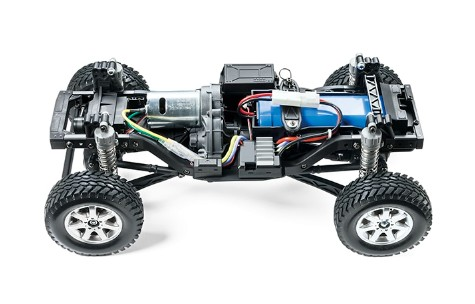

タミヤ CC-02

引用元画像：タミヤ公式サイト
📋 基本情報
| メーカー | タミヤ（Tamiya） |
|---|---|
| 機種名 | CC-02 シャーシ |
| 型番 | 58675（メルセデスベンツ G500）、58715（トヨタ ランドクルーザー 40）、58736（フォード バハ ブロンコ）など |
| 発売時期 | 2019年12月頃（シャーシ登場） |
| 生産状況 | 現行販売中 |
| カテゴリー | ラジコンカー（1/10スケール 電動RCカー） |
| サブカテゴリー | クロスカントリー・クローラー（初心者〜中級者向け） |
| 価格目安 | 17,000円〜22,000円（税込、ボディ付きキットによる） |
📏 シャーシスペック
| ホイールベース | 267mm（変更可能） CC-02M（ミディアム）：252mm CC-02L（ロング）：267mm |
|---|---|
| トレッド | 160mm |
| タイヤ幅 | 33mm |
| タイヤ径 | 90mm |
| フレーム | ラダーフレーム（金属製サブフレーム装備） |
⚙️ 駆動系
| 駆動方式 | シャフトドライブ4WD（クロスカントリー） |
|---|---|
| モーター位置 | 縦置きモーター |
| トランスファーケース | センター配置（実車ライク） |
| プロペラシャフト | 前後プロペラシャフトで駆動を伝達 |
🔧 サスペンション
| 形式 | 4輪 4リンクリジッド |
|---|---|
| ダンパー | CVAオイルダンパー |
| ステアリング | 3分割タイロッド式 |
💡 特徴
CC-01から30年、満を辞してのフルモデルチェンジ
- オフロード走行をはじめ、繊細なコントロールが要求されるロックセクションまで走りが楽しめる
- 本格クロスカントリー4WDシャーシ
実車ライクな駆動系
- センターにトランスファーケースを配置し、プロペラシャフトで前後に駆動を伝達
- 実車感のある構造が魅力
ラダーフレーム構造
- 金属製サブフレームを前後に装備し、高い剛性と実感を両立
- CC-01のバスタブタイプから大きく進化
4輪4リンクリジッド
- CC-01はフロントがダブルウィッシュボーンでしたが、CC-02は前後ともに4リンクリジッドを採用
- より本格的なクローラー志向の設計
セッティングの幅
- ホイールベース変更可能（252mm/267mm）
- ギヤ比調整可能
- 幅広いカスタマイズが楽しめる
多彩なボディ展開
- ランクル、G500、バハブロンコなど、人気の4×4ボディが多数ラインナップ
CC-01からの進化ポイント（約30年ぶりのフルモデルチェンジ）
- フレーム：ラダーフレーム「風」バスタブタイプ → 本格ラダーフレーム（金属サブフレーム）
- フロントサスペンション：ダブルウィッシュボーン → 4リンクリジッド
- リアサスペンション：4リンクリジッド → 4リンクリジッド
- トランスファーケース：後部配置 → センター配置（実車ライク）
- ホイールベース：242mm/252mm/267mm → 252mm（M）/267mm（L）
🔧 ぽすとそに工房での修理実績
修理難易度
★☆☆☆☆（非常に簡単、初心者でも修理可能）
よくある故障・注意点
- CVAダンパーのオイル漏れ（Oリングのチェックとオイル補充が必要）
- ゆっくり走るため、大きな故障は少ない
メンテナンスのポイント
- CVAダンパーのオイル漏れに注意
- 定期的にOリングのチェックとオイル補充を行う
- 構造がシンプルで、メンテナンスもしやすい
初心者へのおすすめポイント
- CC-02はゆっくり走るため、操作が簡単
- 初めてのラジコンとしてもおすすめできる
- 初心者でも安心して扱えるシャーシ
よくあるカスタム
- オンロード走行：ダンパーを短くして、オンロードタイヤを装着
- ドリフト仕様：ドリフトタイヤを装着（4WDドリフト）
- ラリー仕様：大径タイヤラクラク走行
ボディカスタムの楽しみ
- ホイールベース267mmに近いボディなら、様々な載せ替えが可能
- TT-01/02用ボディ（257mm）も相性が良く、カスタムの幅が広がる
おすすめポイント
- ゆっくりとした走行を楽しみたい方
- スケールクローラーに興味がある方
- ランクルやG500などの4×4が好きな方
- ロッククローリングに挑戦したい方
- CC-01からの乗り換えを考えている方
- 初心者でも扱いやすいクローラーを探している方